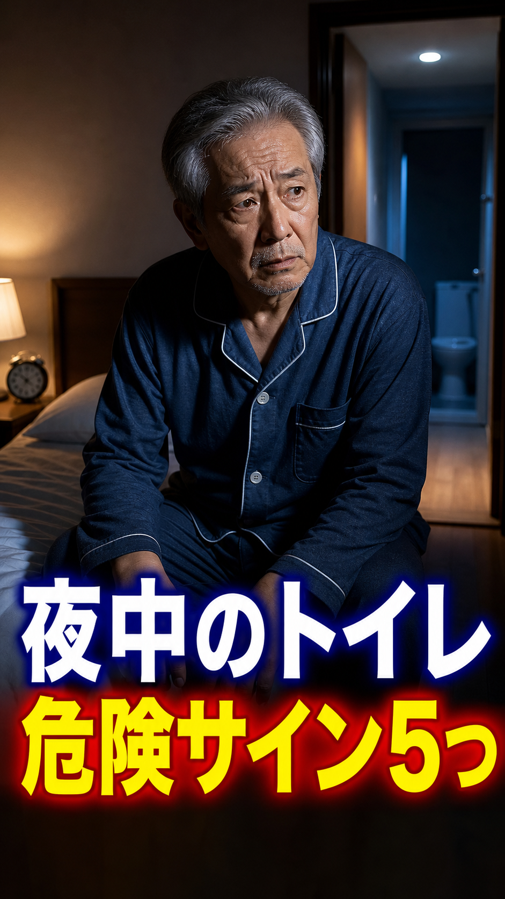

夜中のトイレ危険サイン5つ。年のせいは危ない
Thumbnail

내용 해석
# 내용 해석 ## 제목 밤중 화장실 위험 신호 5가지. 나이 탓으로 넘기면 위험하다 ## 영상 내용 밤중에 화장실 가는 일을 단순히 나이 때문이라고 넘기면 위험합니다. 고령자의 야간빈뇨에서 주의해야 할 위험 신호 5가지입니다. 1. 하룻밤에 두 번 이상 깬다. 수면이 끊기면 낮 동안 피로가 쌓이고, 밤중 낙상 위험도 올라갑니다. 2. 매번 소변이 충분히 많이 나온다. 야간다뇨 가능성이 있으며, 고혈압, 심부전, 신장 기능 저하, 당뇨병이 숨어 있을 수 있습니다. 3. 조금밖에 안 나오는데도 여러 번 간다. 과민성 방광이나 전립선비대 등으로 방광에 소변을 저장하는 힘이 떨어졌을 가능성이 있습니다. 4. 자기 전에 물을 많이 마신다. “피를 맑게 하려고” 자기 전 물을 많이 마시는 습관은 명확한 예방 효과가 확인되어 있지 않습니다. 5. 코골이, 다리 부종, 심한 졸림이 있다. 수면무호흡, 심장 질환, 신장 질환이 관련되어 있을 수 있습니다. 먼저 배뇨 일지를 써보세요. 시간, 양, 수분 섭취, 복용 약을 기록하면 원인을 찾는 단서가 됩니다.
Status
{
"script": "complete",
"sources": "complete",
"scenes": "complete_segment_timed",
"captions": "complete_center_ass_and_srt_segment_synced",
"tts": "complete_elevenlabs_segmented_synced_hiragana_number_pauses",
"images": "complete_fresh_imagegen_project_bound_replaced_scene_11_12_13",
"render": "complete_final_mp4_after_scene_11_12_13_image_replacement"
}Sync fixed: each scene now uses its own ElevenLabs MP3 duration from ffprobe, then audio, captions, and video were regenerated from those timings. Numbered items now use hiragana spoken numbers such as いち、 に、 さん、 with a line break before the sentence for a natural pause. Scene 11-13 images were replaced with fresh realistic imagegen assets and the final MP4 was rerendered. Visual-narration matching has been verified: every image must show the same action, symptom, risk, or medical context as the exact narration beat.
Links
{kind=link}
Description
夜中に何度もトイレで起きるのを、年齢のせいだけにしていませんか。 高齢者が見逃しやすい夜間頻尿の危険サインを5つに絞って解説します。 この動画は一般的な健康情報です。症状が続く、むくみ・息切れ・強い眠気がある、薬や病気が関係していそうな場合は、医師や薬剤師など専門家に相談してください。 #健康雑学 #シニア健康 #夜間頻尿 #頻尿 #高齢者ケア #睡眠不足 #転倒予防 #泌尿器科